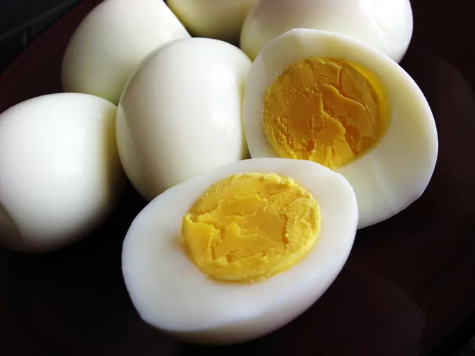

eggs

Perfectly cooked hard-boiled eggs. While you do not taste the vinegar or salt, they both pull the skin from the eggshell so it peels easily without tearing or sticking. I have been making them this way for years. Family members call them "Ken's Eggs."
INGREDIENTS
- 1 tablespoon salt
- ¼ cup distilled white vinegar
- 6 cups water
- 8 large eggs
STEPS
- Gather all ingredients.
- Combine salt, vinegar, and water in a large pot, and bring to a boil over high heat.
- Add eggs one at a time, being careful not to crack them. Reduce the heat to a gentle boil, and cook for 14 minutes.
- Once eggs have cooked, remove them from the hot water, and place into a container of ice water or cold, running water. Cool completely, about 15 minutes. Store in the refrigerator up to 1 week.
- Enjoy!